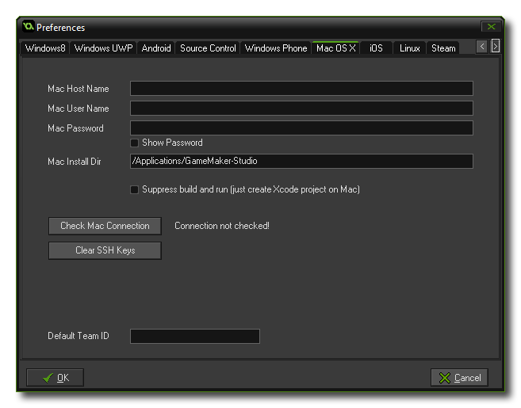

 For GameMaker:
Studio to work with an Apple Mac, a few things need to be set
up first in the preferences. Once you open this tab you will see
the following sections that need to be filled in for GameMaker:
Studio to be able to communicate properly with your Mac and for
you to test your games:
- Mac Host Name - This is the name (or IP address) of the Mac on the local network that you are going to use.
- Mac User Name - This is the name of the user account that will be active for testing your games.
- Mac Password - The password for the user account specified in the section above.
- Mac Install Directory - This is where the Application Oven/Xcode build output files go - the *.app.zip backup copy, plus any intermediate build files, splash screen images, configuration files, etc...
Below these inputs is the option to Suppress build and
run. If this is enabled, GameMaker: Studio will not try
to build and run your game on the target Mac device, but instead
simply push the files to xCode.
Next is the button labelled Check Mac Connection which you
can use to test the information you have supplied to make sure that
the connection to your Mac is correct and working. Please note that
you must have enabled Remote Login on the target mac.
This can be done by going to Preferences ->
Sharing and enable Remote Login for the user you want
to be able to login.
Underneath the Check Connection button there is another button
marked Clear SSH Keys which is used to clear the Secure
Shell Hash. This is provided as an option for those users that
have changed Mac, or re-installed the OS on their current one, and
need to re-configure their secure keys.
Finally you have the Default Team Id field. Here you can
supply a default Apple Team Identifier which will then be
used for all Mac OS builds. If you leave this blank or you wish to
override this ID, you will need to supply one in the Mac OS Global Game
Settings, otherwise your game will not build.